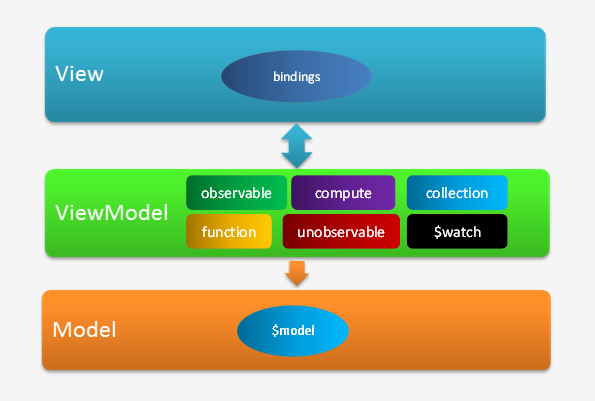

视图模型，ViewModel，也经常被略写成VM，是通过avalon.define方法进行定义，利用Object.defineProperties(IE9+及W3C)与VBScript(IE6-8)技术生成的特殊对象
用户定义的VM都会放在avalon.vmodels对象中集中存储，因此VM必须指定$id属性，我们将通地var vm = avalon.vmodels[$id]来获取你的VM
VM还拥有 $watch, $unwatch, $fire, $model等方法
视图里面，我们可以使用ms-controller, ms-important指定一个VM的作用域
在ms-each, ms-with，ms-repeat绑定属性中，它们会创建一个临时的VM，我们称之为代理VM， 用于放置$key, $val, $index, $last, $first, $remove等变量或方法
可以通过以下方式，实现添加子属性
VM中的数据更新，只能通过 = 赋值方式实现
但要注意在IE6-8，由于VM是一个VBScript对象，为VM添加新属性会抛错， 因此我们想批量更新属性要时格外小心了，需要用hasOwnProperty进行过滤确保你的对象结构足够扁平，套嵌层次不能太深，里面的数组不能太长
avalon在1.3引入新风格
旧风格是指定义VM时需传入ID与回调, 新风格是指定义VM时需传入一个对象定义VM时，是通过define方法，无论是新风格还是旧风格，你最初添加的属性从这方法出来
已经不是原来的属性了。 这些能监控的属性在JS里有个一专门的术语叫访问器属性
这种属性是用户赋给它们，它们就返回什么，不会做额外的事情
函数的prototype如果被改变，相当于将其父类改变了，会new不同类型的实例
DOM的innerHTML，我们赋值时是一个字符串，再取出时，这字符串可能会与原来的不一样， 并且在原元素上生成了不一样的子节点IE8+新添加的语言特征，允许用户在赋值或取值都经过预先设定的函数，从而实现内部属性 的那一种特殊效果
无法哪一种，都要求我们设置一个读方法getter，一个写方法setter
getter， setter是用于改写用户访问某属性的行为
一般来说，我们对某属性的常用操作有如下四种，赋值，取值，遍历，删除
像数组的length属性与元素节点的innerHTML， 会在用户取值或赋值做一些额外的操作，它们就是访问器属性
avalon.define生成的VM就是一个包含了是访问器属性的魔术对象
avalon会在它们的setter,getter方法做依赖收集与同步视图等工作， 从来让我们就算不写一行有关DOM操作的代码，也能做jQuery那种灵活操作DOM的效果
avalon只会转换预先定义好的属性为访问器属性，对后来添加的属性无动于衷